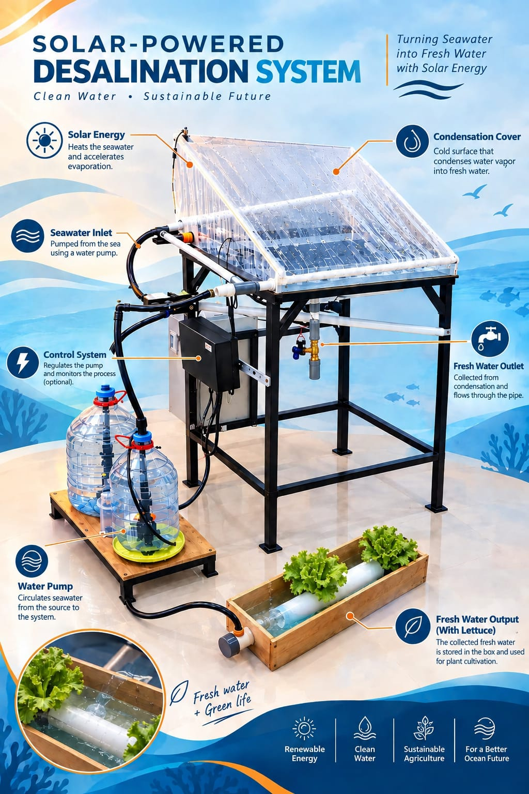

REVEX VOLUME 2
SEA WATER FARMING
Energy-Efficient Solar Thermal Desalination for Agriculture
Turning abundant seawater into an alternative water resource for sustainable agriculture through thermal desalination, solar energy integration, and smart monitoring.

THE CHALLENGE
Water is essential for agriculture, but freshwater is limited.
Agriculture is the largest user of freshwater globally. As food demand continues to grow, the pressure on freshwater resources is also increasing.
Growing Water Demand
Agricultural production requires large amounts of water to support food production and crop growth.
Limited Freshwater
Freshwater resources are limited and increasingly exposed to pressure from population growth and agricultural activities.
Abundant Seawater
Seawater represents an abundant water resource, especially for communities and agricultural areas located near coastal regions.
OUR SOLUTION
Turning seawater into an alternative water resource.
Sea Water Farming utilizes thermal desalination to separate water from dissolved salts through evaporation and condensation.
The system is designed for agricultural applications, while integrating energy monitoring and smart control to support system evaluation.
See How It WorksSeawater
Seawater enters the desalination system.
Thermal Desalination
Thermal energy is supplied to heat the seawater.
Evaporation
Water evaporates while salts remain behind.
Condensation
Water vapor is cooled and converted into liquid.
Freshwater
Distilled water is collected for further agricultural evaluation.
HOW IT WORKS
From seawater to freshwater.
The system uses thermal evaporation and condensation to separate water from dissolved salts.
Seawater Input
Seawater is introduced into the evaporation chamber as the raw water source.
Thermal Heating
Thermal energy is supplied to increase the seawater temperature and initiate evaporation.
Evaporation
Water changes into vapor while most dissolved salts remain in the source water.
Condensation
The water vapor is cooled inside the condenser and converted back into liquid water.
Freshwater Collection
The resulting distilled water is collected for further evaluation and agricultural use.
THE PROTOTYPE
A compact system for thermal desalination.
The prototype integrates the thermal, water, sensing, and control systems into a single experimental platform.
Evaporation Chamber
The chamber contains seawater and provides the environment for thermal evaporation.
Thermal System
A 600 W heater supplies thermal energy for the desalination process.
Condenser
Water vapor is cooled and converted into liquid freshwater.
Monitoring & Control
Sensors and an ESP32 support monitoring and control of the experimental system.
SYSTEM SPECIFICATIONS
Integrated thermal, water, and control systems.
The prototype combines thermal processing, water management, sensing, and control technologies in one experimental platform.
Thermal System
Components responsible for supplying and managing thermal energy during desalination.
- 600 W AC Heater
- Evaporation Chamber
- Condenser
- 12 V Cooling Fan
Water System
Components used to manage seawater, freshwater collection, and water flow.
- Seawater Input
- Freshwater Collection
- 12 V DC Pumps
- 220 V Solenoid Valve
- Water Level Monitoring
Monitoring & Sensing
Sensors provide real-time information about water, energy, and system conditions.
- DS18B20 Temperature
- TDS Sensor
- pH Sensor
- Turbidity Sensor
- Load Cell + HX711
- BH1750 Light Sensor
- PZEM-004T Energy Monitoring
Control & Communication
The control layer connects field devices with the monitoring and supervisory interface.
- ESP32 Controller
- Wi-Fi Communication
- Relay Module
- AC Dimmer
- Web-based HMI
SYSTEM ARCHITECTURE
From field devices to real-time monitoring.
The system connects field sensors and actuators with a web-based monitoring and control interface.
Sensors & Actuators
Temperature, TDS, pH, turbidity, water level, light intensity, energy monitoring, pumps, heater, and solenoid valve.
ESP32
Collects sensor data and sends control commands to field devices.
Wi-Fi / HTTP API
Transfers monitoring data and control commands between the ESP32 and server.
Flask + SQLite
Processes requests, stores historical data, and manages communication between the field system and HMI.
Web HMI
Provides real-time monitoring, historical data visualization, system status, and supervisory control.
Prototype performance through experimental testing.
The prototype was tested to evaluate freshwater production, condensation rate, energy demand, and the performance of the monitoring and control system.
Maximum condensation rate
Maximum tested distillate production
Measured condensation rate
Actuator control commands
Freshwater production was evaluated at different production levels.
The prototype was tested using three distillate production levels: 200 g, 400 g, and 1,000 g. The results show that higher freshwater production requires greater thermal energy input during evaporation.
The measured condensation rate ranged from 40.47 g/h to 198.16 g/h, with the highest measured rate reaching 198.16 g/h.
Measured condensation rate
The experimental results recorded condensation rates between 40.47 g/h and 198.16 g/h.
Monitoring and control performance
Average response time of controlled devices
The prototype successfully demonstrated thermal desalination and digital supervision.
The experiments demonstrate that the prototype can convert seawater into distilled water through thermal evaporation and condensation. The monitoring and control system also successfully recorded sensor data and operated the actuators through the web-based HMI.
What the prototype achieves — and what comes next.
The current prototype demonstrates the feasibility of thermal desalination for agricultural water applications while integrating sensing, monitoring, and supervisory control.
What We Achieved
Current capabilities of the prototype
Thermal Desalination
Seawater is converted into distilled water through thermal evaporation and condensation.
Solar Energy Integration
The system is designed around solar thermal energy as a potential renewable heat source for desalination.
Integrated Monitoring
Multiple sensors monitor temperature, water condition, level, light intensity, and electrical parameters.
Web-Based Control
The ESP32 and web-based HMI enable remote monitoring and supervisory control of the system.
Current Gaps
Limitations identified from the prototype
Solar Dependency
Solar-based operation is influenced by weather conditions and available solar intensity.
Thermal Losses
Heat losses within the system can reduce thermal utilization and freshwater production.
Prototype-Scale Production
Freshwater production is still limited by the current prototype scale and thermal capacity.
Further Validation
Larger-scale operation, long-term performance, and water-quality requirements for specific agricultural applications require further testing.
These gaps define the next stage of development: improving thermal performance, strengthening solar integration, and validating the system at a larger scale.
From prototype to practical application.
Future development focuses on improving thermal performance, strengthening renewable energy integration, and validating the system at a larger scale for agricultural applications.
Prototype
Demonstrate thermal desalination and integrate sensing, monitoring, and supervisory control.
Thermal Optimization
Reduce thermal losses and improve heat utilization within the evaporation and condensation process.
Solar Integration
Strengthen the integration of solar thermal energy as a renewable heat source for desalination.
Automated Control
Develop more adaptive control strategies based on temperature, water level, solar intensity, and system operating conditions.
Larger-Scale Testing
Evaluate production capacity, energy performance, reliability, and long-term operation at a larger scale.
Agricultural Application
Explore the use of desalinated water as an alternative water resource for agricultural applications in water-stressed coastal areas.
What we aim to improve next.
Thermal Performance
Improve heat transfer and reduce unnecessary thermal losses.
Renewable Energy
Increase the contribution of solar energy to the thermal desalination process.
System Automation
Improve automatic operation using real-time sensor feedback.
Scale & Validation
Conduct longer-duration and larger-scale testing for agricultural applications.
Toward sustainable coastal water solutions.
The long-term direction is to transform the current prototype into a more efficient, automated, and scalable desalination system that can support agricultural water needs.
See the system in action.
Explore the Sea Water Farming prototype, its thermal desalination process, monitoring system, and experimental results through our project video.
Sea Water Farming: Energy-Efficient Solar Thermal Desalination for Agriculture
A short overview of our approach to seawater desalination for agricultural applications, combining thermal evaporation, condensation, sensing, monitoring, and supervisory control.
The team behind Sea Water Farming.
Sea Water Farming is developed by a multidisciplinary student team combining engineering, embedded systems, monitoring, and system integration to address agricultural water challenges.

Lecturer Name, S.T., M.T.
Project Supervisor
From seawater to an alternative water resource for agriculture.
Explore how thermal desalination, renewable energy integration, and smart monitoring can contribute to sustainable agricultural water solutions.